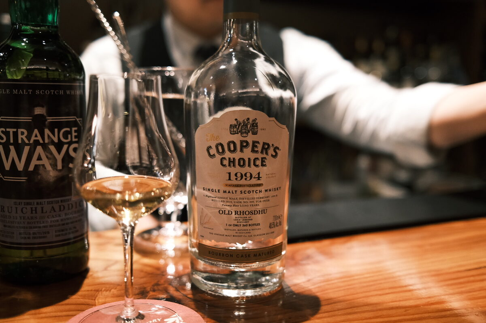

Old Rhosdu (Loch Lomond) 1994 Cooper's Choice 25 years 48.5% (bourbon cask)
Old Rhosdu – an oldschool malt, unfortunately lost, from everyone’s favourite chameleon distillery. Loch Lomond! Will there be melons…?
Colour Gold.
Nose Fruity — white peaches, nectarines. Dark chocolate, quite earthy. Deep caramel sweetness. Toffee. Malty and heavy.
Palate Milky, big melon hit (Loch Lomond is here!). Oak and oak spices. Sichuan pepper!? Nectarines, starfruit. White grapes. Some orange peel and a pinch of sugar. Mind that, a pinch of chalk too. Apple juice.
Finish Long and warming. A little astringency. Hot chocolate and cacao nibs. Earthy. Caramel. Quite herbal, a little bitter.
Comments Old school. Big fruity hit, also quite earthy, chocolatey. 87/100.

Posted by Dominic on 28 May 2021